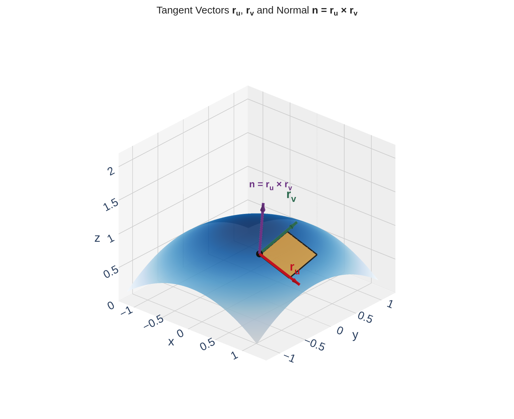

Section 16.6: Parametric Surfaces and Their Areas
Vector Calculus
MTH 310
Calculus III
From Parametric Curves to Parametric Surfaces
In Chapter 13 we parameterized curves in space with one parameter:
\[\vec{r}(t) = \langle x(t),\; y(t),\; z(t) \rangle, \quad a \leq t \leq b\]
One parameter traces out a one-dimensional object (a curve).
To describe a surface (a two-dimensional object in \(\mathbb{R}^3\)), we need two parameters:
Parametric Surface
A parametric surface \(S\) is defined by a vector function
\[\vec{r}(u,v) = \langle x(u,v),\; y(u,v),\; z(u,v) \rangle\]
where \((u,v)\) varies over a parameter domain \(D \subseteq \mathbb{R}^2\).

As \((u,v)\) ranges over \(D\), the function \(\vec{r}\) bends the flat rectangle into the curved surface \(S\). The grid lines go along for the ride — the blue \(u\)-curves and red \(v\)-curves on \(S\) are the images of the grid lines in \(D\).
Example 1: The Unit Sphere
Example 1
Find a parametric representation for the unit sphere \(x^2 + y^2 + z^2 = 1\).
Example 2: Identify the Surface
Example 2
Describe and sketch the surface with parametric equations
\[\vec{r}(u,v) = \langle u,\; 3\cos v,\; 3\sin v \rangle\]
Quick Check: Match the Parameterization
What surface does each parameterization describe?
- \(\vec{r}(u,v) = \langle u\cos v,\; u\sin v,\; u \rangle\), \(u \geq 0\), \(\;0 \leq v \leq 2\pi\)
- \(\vec{r}(u,v) = \langle u,\; v,\; 4 - u^2 - v^2 \rangle\)
Surfaces of Revolution
Many surfaces arise by rotating a curve around an axis. The rotation angle becomes the second parameter.
Step 1: the generating curve. Take the curve \(y = f(x)\) in the \(xy\)-plane, \(a \leq x \leq b\).
Step 2: rotate about the \(x\)-axis. At each fixed \(x\), the cross-section is a circle of radius \(|f(x)|\) in the \(yz\)-plane, parameterized by angle \(\theta\):
\[y = f(x)\cos\theta, \qquad z = f(x)\sin\theta\]
Step 3: assemble the full parameterization.
\[\vec{r}(x, \theta) = \langle x,\; f(x)\cos\theta,\; f(x)\sin\theta \rangle, \quad a \leq x \leq b, \;\; 0 \leq \theta \leq 2\pi\]
Example 3
Give parametric equations for the surface obtained by rotating \(y = x(1-x)\), \(0 \leq x \leq 1\), about the \(x\)-axis.
Tangent Vectors to a Parametric Surface

In Section 15.5, we found the surface area correction factor for graphs \(z = f(x,y)\) by taking tangent vectors and computing their cross product. Now we generalize to any parametric surface.
Tangent vectors: At any point \(\vec{r}(u_0, v_0)\), differentiate with respect to each parameter:
\[\vec{r}_u = \frac{\partial \vec{r}}{\partial u} = \left\langle \frac{\partial x}{\partial u},\; \frac{\partial y}{\partial u},\; \frac{\partial z}{\partial u} \right\rangle \qquad \vec{r}_v = \frac{\partial \vec{r}}{\partial v} = \left\langle \frac{\partial x}{\partial v},\; \frac{\partial y}{\partial v},\; \frac{\partial z}{\partial v} \right\rangle\]
\(\vec{r}_u\) is tangent to the \(u\)-curve (hold \(v\) fixed, vary \(u\)).
\(\vec{r}_v\) is tangent to the \(v\)-curve (hold \(u\) fixed, vary \(v\)).
Normal vector: If \(\vec{r}_u \times \vec{r}_v \neq \vec{0}\),
\[\vec{n} = \vec{r}_u \times \vec{r}_v\]
is normal to the surface at that point (perpendicular to both tangent directions).
Surface Area of a Parametric Surface
Same strategy as Section 15.5: approximate each small surface patch by a parallelogram.
![Two panels side by side illustrating the Riemann-sum derivation of the surface area formula. Left panel: the flat parameter domain D is tiled with a six-by-six grid of small rectangles; one cell is highlighted in amber. An arrow labeled r(u,v) connects to the right panel. Right panel: the corresponding curved surface S is tiled with small curvilinear cells that are approximately parallelograms; the cell corresponding to the highlighted rectangle is filled in amber, with two tangent-vector edges r_u times Delta u (red) and r_v times Delta v (blue) marking two sides.](figures/area_riemann.png)
Tile \(D\) with rectangles of size \(\Delta u \times \Delta v\). Under \(\vec{r}\), each rectangle maps to a small patch on \(S\) approximately shaped like a parallelogram.
Patch sides: \(\vec{r}_u \Delta u\) and \(\vec{r}_v \Delta v\). Patch area:
\[\Delta S \approx |\vec{r}_u\,\Delta u \times \vec{r}_v\,\Delta v| = |\vec{r}_u \times \vec{r}_v| \, \Delta u\, \Delta v\]
Sum and take the limit \(\Delta u, \Delta v \to 0\):
Surface Area of a Parametric Surface
If \(S\) is given by \(\vec{r}(u,v)\) for \((u,v) \in D\), and \(\vec{r}\) is smooth, then
\[A(S) = \iint_D |\vec{r}_u \times \vec{r}_v| \, dA\]
Quick Check: Compute the Normal Vector
For the cylinder \(\vec{r}(u,v) = \langle u,\; 3\cos v,\; 3\sin v \rangle\), find \(\vec{r}_u\), \(\vec{r}_v\), and \(\vec{r}_u \times \vec{r}_v\).
Example 4: Surface Area of a Sphere
Example 4
Use the parametric representation to find the surface area of a sphere of radius \(R\).
Parameterization: \(\vec{r}(\theta,\phi) = \langle R\sin\phi\cos\theta,\; R\sin\phi\sin\theta,\; R\cos\phi \rangle\), \(0 \leq \phi \leq \pi\), \(\;0 \leq \theta \leq 2\pi\).
Example 5: Surface Area of a Cone
Example 5
Find the surface area of the cone \(z = \sqrt{x^2 + y^2}\) below \(z = 3\).
Special Case: Graphs \(z = f(x,y)\) Revisited
Let's verify that the parametric formula recovers our Section 15.5 result.
Parameterization of a graph: \(\vec{r}(x,y) = \langle x,\; y,\; f(x,y) \rangle\)
Tangent vectors:
\[\vec{r}_x = \langle 1,\; 0,\; f_x \rangle \qquad \vec{r}_y = \langle 0,\; 1,\; f_y \rangle\]
Cross product:
\[\vec{r}_x \times \vec{r}_y = \begin{vmatrix} \vec{i} & \vec{j} & \vec{k} \\ 1 & 0 & f_x \\ 0 & 1 & f_y \end{vmatrix} = \langle -f_x,\; -f_y,\; 1 \rangle\]
\[|\vec{r}_x \times \vec{r}_y| = \sqrt{f_x^2 + f_y^2 + 1}\]
So the parametric surface area formula gives:
\[A(S) = \iint_D |\vec{r}_x \times \vec{r}_y|\, dA = \iint_D \sqrt{f_x^2 + f_y^2 + 1}\, dA\]
This is exactly the formula from Section 15.5!
Quick Check: Compute the Correction Factor
For the paraboloid \(\vec{r}(r,\theta) = \langle r\cos\theta,\; r\sin\theta,\; r^2 \rangle\), \(0 \leq r \leq 2\), find \(|\vec{r}_r \times \vec{r}_\theta|\).
Example 6: Surface Area of a Helicoid
Example 6
Find the surface area of the helicoid \(\vec{r}(u,v) = \langle u\cos v,\; u\sin v,\; v \rangle\) for \(0 \leq u \leq 1\), \(0 \leq v \leq 2\pi\).